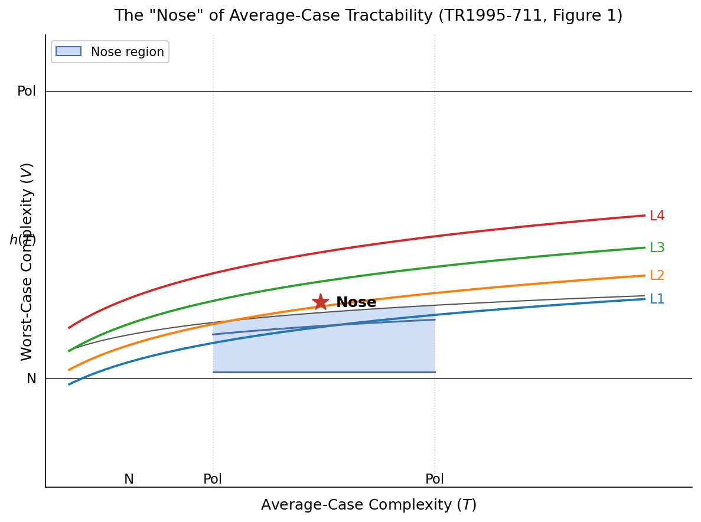

Formalizes a 1995 average-case complexity result for Multilevel Syllogistic in Lean 4.
Abstract
We describe a Lean~4 formalization revisiting NYU Courant Technical Report TR1995-711 on the average-case complexity of Multilevel Syllogistic (MLS). The development encodes Reischuk--Schindelhauer average-case classes, an axiomatic MLS/EMLS semantics layer, a partial Ferro--Omodeo--Schwartz decision procedure with proved soundness and partial completeness on a membership-free fragment, serialization and step budgets, and conditional NP-average completeness and non-AvP hardness corollaries modulo explicitly documented structural axioms. Full Lean sources are inlined in the appendix modules.
Problem
Revisit and machine-check NYU Courant Technical Report TR1995-711 on the average-case complexity of Multilevel Syllogistic (MLS).
Approach
A Lean 4 development encodes Reischuk-Schindelhauer average-case classes, an axiomatic MLS/EMLS semantics layer, a partial Ferro-Omodeo-Schwartz decision procedure with proved soundness and partial completeness on a membership-free fragment, serialization and step budgets, and conditional complexity corollaries modulo documented structural axioms.

Figure 1: The average-case complexity “nose” diagram (TR1995-711, Figure 1)
Results
Produces a formalized development with conditional NP-average completeness and non-AvP hardness corollaries, with full Lean sources inlined in the appendix modules.